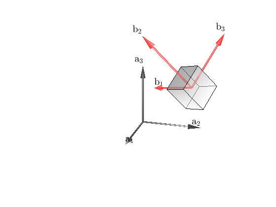

Contents
clc; clear all; close all;
Make rotation matrix function R = R(k, theta) (fill in)
skew = @(w) [0, -w(3), w(2); w(3), 0, -w(1); -w(2), w(1), 0];
R_func = @(k, theta) cos(theta)*eye(3) + sin(theta)*skew(k) + (1-cos(theta))*k*k';
Rotation axis and angles for a->b, b->c (fill in)
kab = [0; 0; 1];
thetaab = 3*pi/2;
kbc = [0; -1; 0];
thetabc = pi/2;
Rab = R_func(kab, thetaab);
Rbc = R_func(kbc, thetabc);
rotation matrix, axis and angle from c->a (fill in)
Rca = (Rab*Rbc).';
[thetaca, kca] = Shepperd(Rca);
thetaca = double(thetaca);
kca = double(kca);
stopAngle = thetaab+thetabc+thetaca;
Calculate rotation matrices (nothing to fill in)
n = 200;
theta_t = linspace(0, 2*pi, n+1);
dtheta = theta_t(2) - theta_t(1);
R_t1 = R_func(kab, dtheta);
R_t2 = R_func(kbc, dtheta);
R_t3 = R_func(kca, dtheta);
Rlist = cell(n+1, 1);
Rlist{1} = eye(3);
for i=(2:n+1)
if (i <= n/4)
Ri = Rlist{i-1}*R_t1;
elseif (i > n/4) && (i <n/2)
Ri = Rlist{i-1}*R_t2;
else
Ri = Rlist{i-1}*R_t3;
end
if (theta_t(i) >= stopAngle)
Ri = Rlist{i-1};
end
Rlist{i} = Ri;
end
Real-time animation (fill in)
ScaleFrame = 5;
FS = 15;
SW = 0.035;
time_display = 0;
for i =(1:n+1)
state_animate = Rlist{i};
p = [5;5;5];
figure(1);clf;hold on
MakeFrame( zeros(3,1),eye(3),ScaleFrame,FS,SW,'a', 'color', 'k')
MakeFrame( p,state_animate,ScaleFrame,FS,SW,'b', 'color', 'r')
DrawRectangle(p,state_animate ,'color',[0.5,0.5,0.5]);
FormatPicture([0;0;2],0.5*[73.8380 21.0967 30.1493])
if time_display == 0
display('Hit a key to start animation')
pause
tic
end
time_display = toc;
end
Hit a key to start animation
